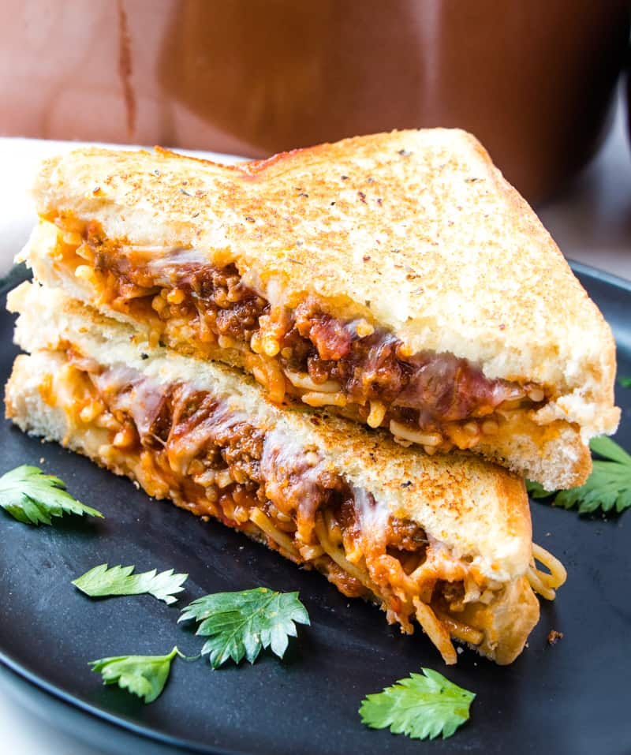
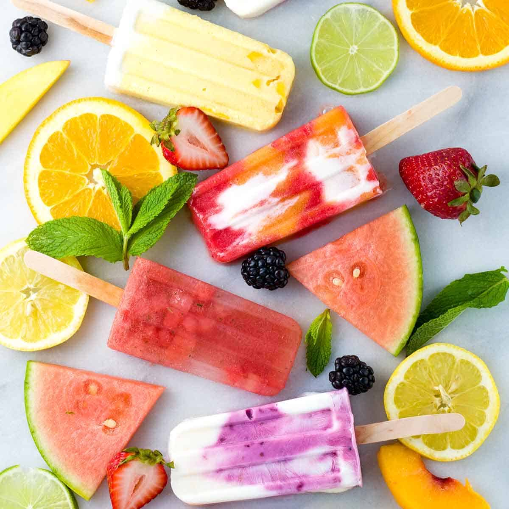
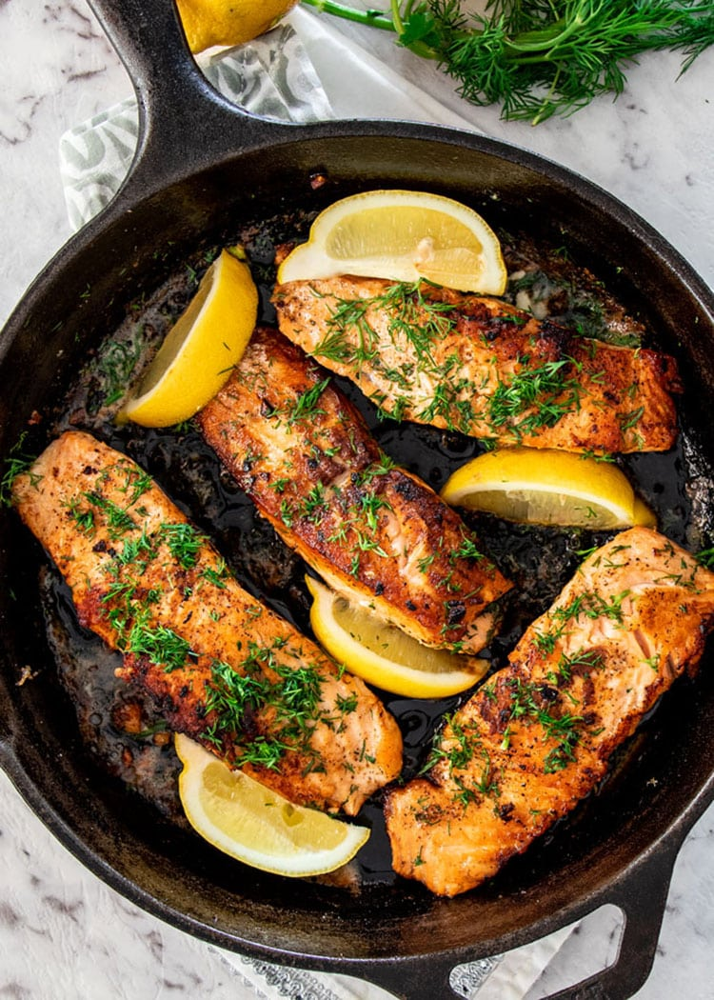
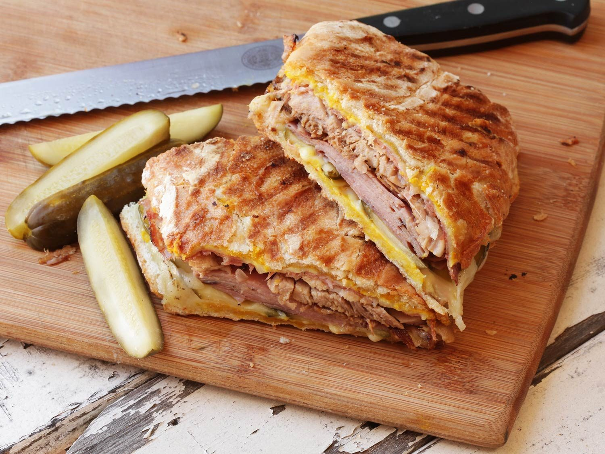

The Perfect Sandwich, A Real NYC Classic
Add Descriptions:

Let Me Tell You About This Steak
Add Descriptions:

Cherries, interrupted
Add Descriptions:
More descriptions:

Some nice wine:
Add Descriptions:

All I Need Is a Popsicle
Add descriptions:

Salmon For Your Skin
Add descriptions:

The Perfect Sandwich, A Real Classic
Add descriptions:

Le French
Add descriptions:
Live Events

What We Do
Dooley Eats is a platform for Emory students to share their opinions about popular restaurants in Atlanta and food in general.
As members of Team 0100.0, we strive for utmost user-friendliness and reliability. As such, Dooley Eats will become THE website bookmarked by every Emory food enthusiast.